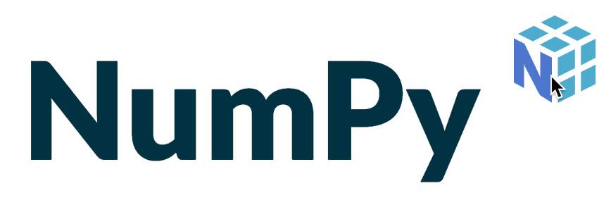

Biblioteker i Python
Contents
Biblioteker i Python¶
{kind=link}
{kind=link}
Python har mange innebygde funksjoner og operasjoner. Innenfor det som vi skal jobbe med i fagene her, så trenger vi ofte en del andre biblioteker med flere funksjoner i tillegg. I matematikk får vi stor bruk for numpyog matplotlib og særlig den delen som handler om plotting matplotlib.pyplot.
Senere, eller i andre fag, vil du gjerne også få bruk for scipy, pandas, geopandas eller scipy.
Advarsel
Lærebøkene har en tendens til å bruke ett stort bibliotek pylab. Dette er ikke en anbefalt metode. Hovedårsaken til dette er at det er satt sammen av flere ulike bibliotek, der det finnes flere funksjoner med samme navn. Du vil dermed ikke har kontroll på at det som regnes ut er helt riktig. Bruk derfor numpy og matplotlib som du vil lære her.
Eksempel på bruk av numpy
import numpy
tall = float(input('Hvilket tall vil du ta kvadratroten av? \n >> '))
kvadratrot=numpy.sqrt(tall)
print(f'Kvadratroten av {tall} er lik {kvadratrot})
Koden over importerer først biblioteket numpy. Så henter den inn en verdi fra brukeren ved input, som gjøres om til et flyttall. numpy.sqrt() betyr at man skal gå til biblioteket numpy (står før punktum) og hente kommandoen sqrt fra det biblioteket. Denne kommandoen tar kvadratroten av en verdi.
Forkortelser¶
Noen av bibliotekene har lange navn, som gjør at det blir mye å skrive i koden. Det er derfor vanlig at man lager forkortelser. Noen av disse forkortelsene er mer faste, sånn at de brukes globalt, som gjør det lettere å dele kode med andre, og ikke minst finne hjelp på nettet.
Standard forkortelser for en del av de bibliotekene som vi skal bruke er
import numpy as np
import matplotlib.pyplot as plt
import pandas as pd
Eksempel over med bruk av forkortelse
import numpy as np
tall = float(input('Hvilket tall vil du ta kvadratroten av? \n >> '))
kvadratrot=np.sqrt(tall)
print(f'Kvadratroten av {tall} er lik {kvadratrot})
Trenger bare en kommando fra et bibliotek?¶
Noen ganger trenger du bare én kommando fra et bibliotek. Da kan du bruke kommandoen from.
from numpy import sqrt
Hvis du gjør det, så trenger du ikke kalle opp biblioteket senere, men bruke funksjonen uten å kalle numpy:
from numpy import sqrt
tall = 7890
roten = sqrt(tall)
Advarsel
En del lærebøker bruker from <...> import *. Problemet er at ulike biblioteker kan inneholde samme funksjonsnavn, som ikke gjør det samme, eller de kan inneholde en del variabler som verdier. Dette vil da kunne skape problemer i din kode hvis du bruker de samme variabelnavnene uten å definere dem skikkelig. Vi anbefaler derfor ikke å bruke import *